La patronal vasca , Confebask , llamó hoy la atención sobre la existencia en la Comunidad Autónoma Vasca de 18.000 puestos de trabajo sin cubrir debido a la falta de mano de obra adecuada , cuya incorporación al mercado laboral reduciría las previsiones sobre la tasa de paro para el año 2003 en dos puntos.
Según un estudio que presentó hoy el secretario general de la patronal vasca , José Guillermo Zubía , las profesiones relacionadas con las altas tecnologías , los oficios tradicionales y los empleos de poca cualificación son los que más escasez de trabajadores tienen , en especial , los de la industria y la construcción.
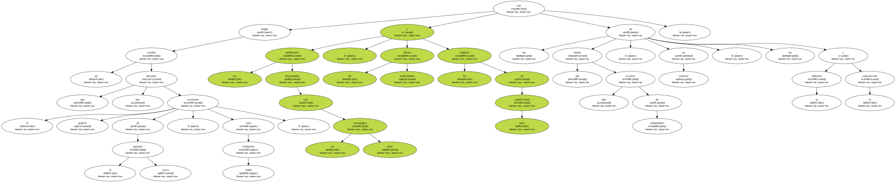Zubía explicó que , además del " vertiginoso avance tecnológico " de los últimos años , el desprestigio sufrido por la Formación Profesional ( FP ) ha provocado un abandono de estos oficios en favor de una concentración de estudiantes en carreras universitarias de bajo o muy bajo grado de inserción laboral , como el Derecho o Psicología.
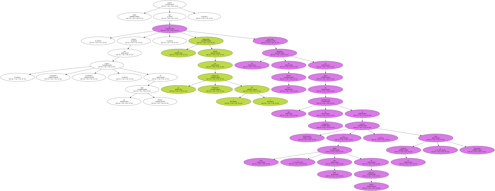El estudio desvela que , por cada estudiante de FP hay tres universitarios , un 45 por ciento de los cuales cursan carreras con muy pocas salidas laborales.
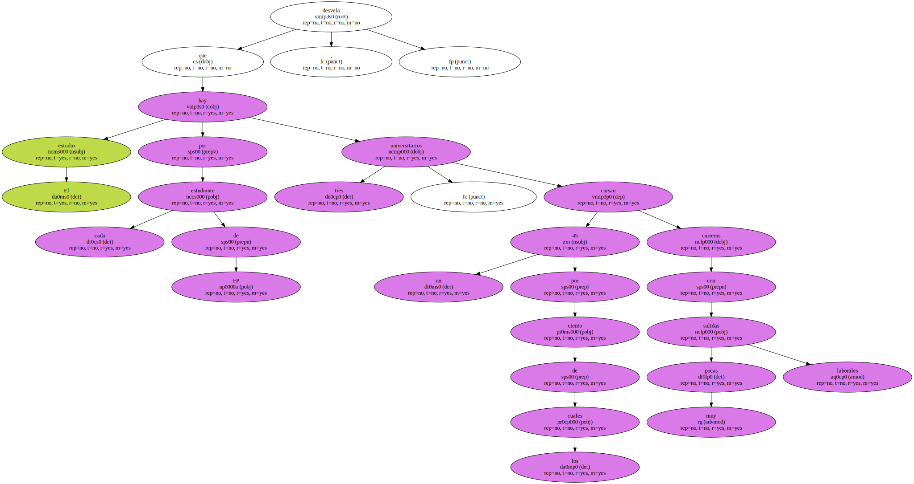Sin embargo , para estudios de formación de la construcción , sector donde más oferta de empleo existe , sólo hay 172 alumnos matriculados en la CAV.
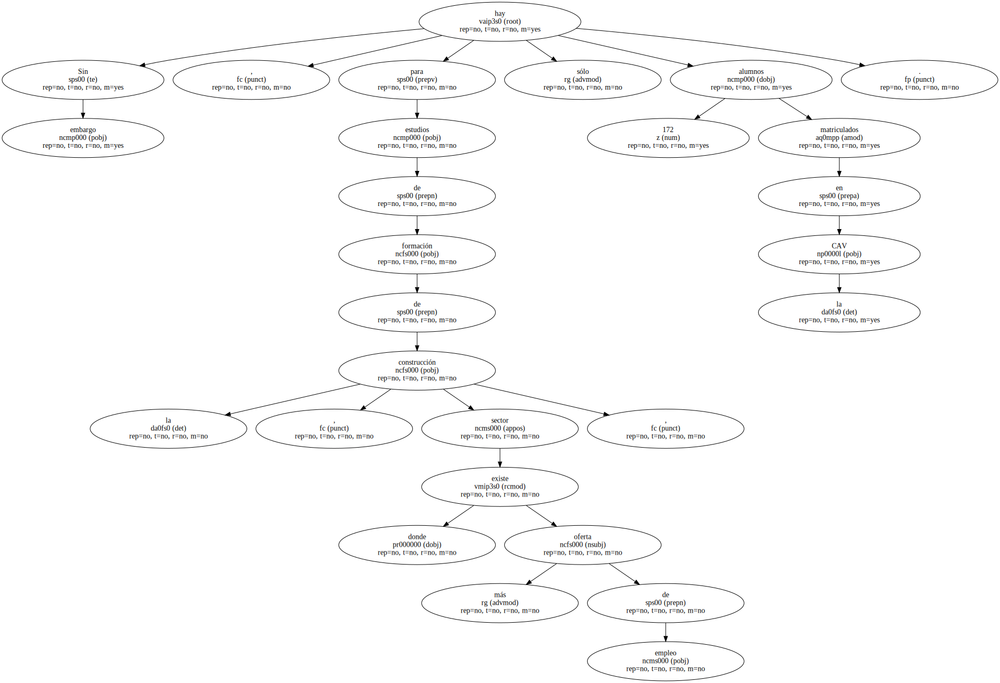Según Zubía , en el caso de las mujeres esta tendencia es " aún más grave " , ya que " siguen decantándose por las profesiones tradicionalmente femeninas " , lo que sitúa al 48 por ciento de las mujeres en carreras de bajo o muy bajo grado de inserción laboral frente a un 28 por ciento de los hombres.
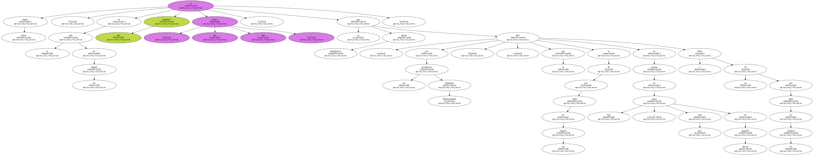El secretario general de Confebask propuso incidir en la sensibilización de la población y modificar la orientación profesional de los jóvenes como vías de solución a la escasez de trabajadores.
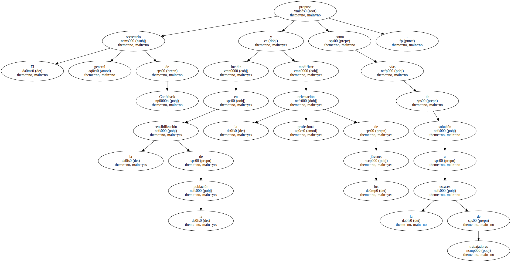Además , subrayó la necesidad de fomentar la formación ocupacional y , si esta tendencia sigue , recurrir a la política de inmigración " en un buen número de casos " para evitar el " estrangulamiento del crecimiento de ciertas empresas y la generación de nuevos puestos de trabajo ".
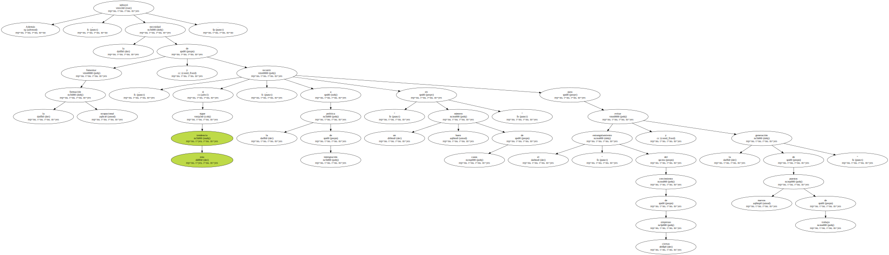UGT y CCOO pidieron hoy que el recién inaugurado diálogo social aborde los " graves " problemas de precariedad del empleo y una mejor redistribución de la riqueza que se está generando en España.
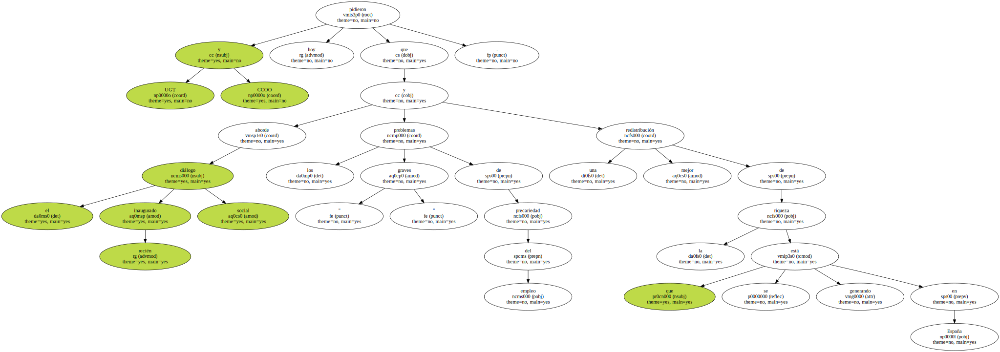El paro registrado en las oficinas del Instituto Nacional de Empleo ( INEM ) bajó en mayo pasado en 47.689 personas , lo que situó el total de desempleados en 1.531.169 , el 9,16 de la población activa , y se firmaron 1.223.112 contratos , de los que 107.256 fueron indefinidos.
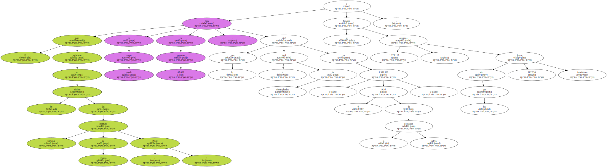La central ugetista señaló que las cifras del desempleo en el mes de mayo muestran una reducción del paro menor que en años anteriores y un crecimiento " escandaloso " de la contratación temporal , que ha supuesto el 91,2 por ciento de todos los contratos.
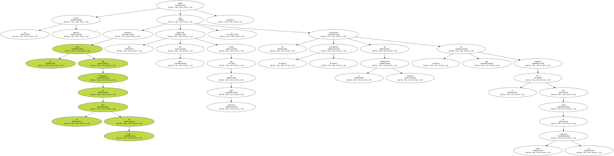Por ello , indicó la necesidad de que mediante el diálogo social se afronte ese problema del mercado de trabajo , partiendo de la base de una igualdad de trato entre contratos temporales e indefinidos en lo que se refiere a regulación , indemnización y coste para la empresa.
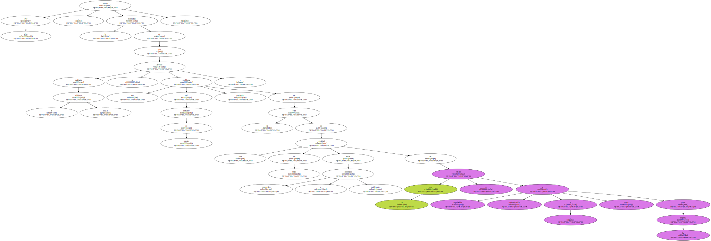UGT subrayó que no se puede permitir el " abuso " empresarial en la utilización de ese tipo de contratación y que son necesarias medidas eficaces que favorezcan que España pueda converger con los restantes países de la Unión Europea en cantidad y calidad del empleo.

CCOO valoró la reducción del paro pero reiteró la necesidad de que el diálogo social aborde con carácter prioritario una mejor redistribución de la riqueza que se está generando.
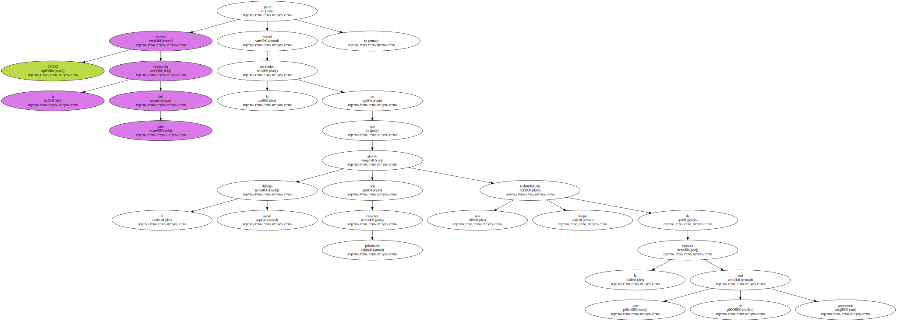También consideró que es preciso mejorar la calidad del empleo , aumentar la cobertura por desempleo , perfeccionar la protección social y frenar la siniestralidad laboral.
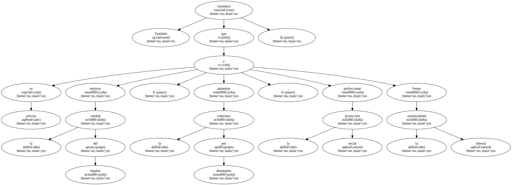El secretario general de UGT , Cándido Méndez , criticó que la " brutalidad " de la temporalidad de los contratos impide la caída del paro y lamentó que los últimos datos de desempleo registrado siguen siendo " desfavorables ".

El paro registrado en las oficinas del Instituto Nacional de Empleo ( INEM ) bajó en mayo pasado en 47.689 personas , una reducción del 3,02 por ciento , lo que situó el total de desempleados en 1.531.169 , el 9,16 por ciento de la población activa.
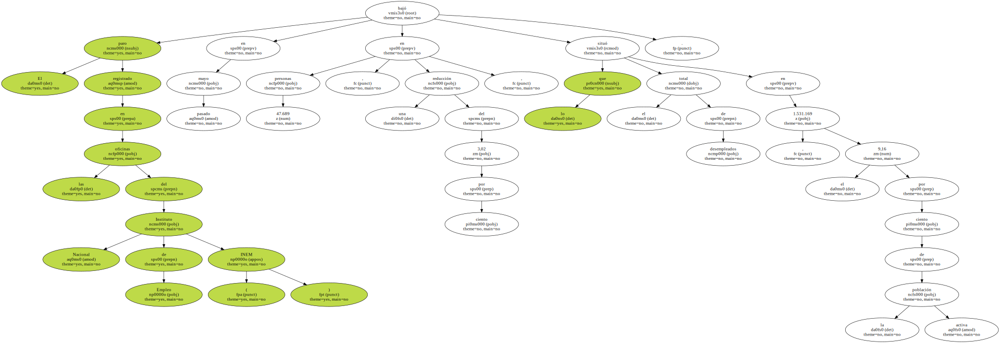